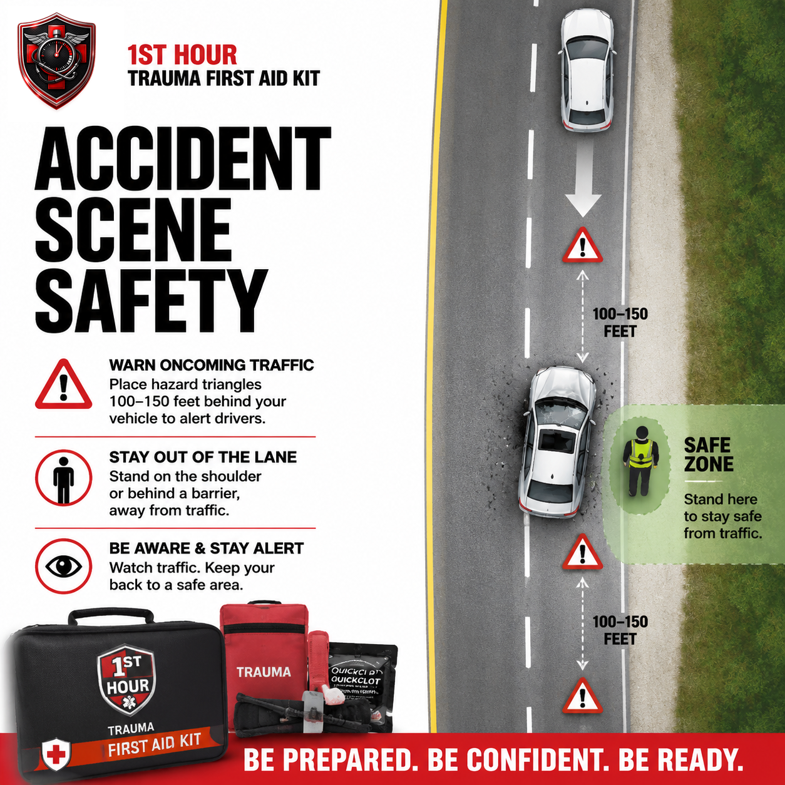
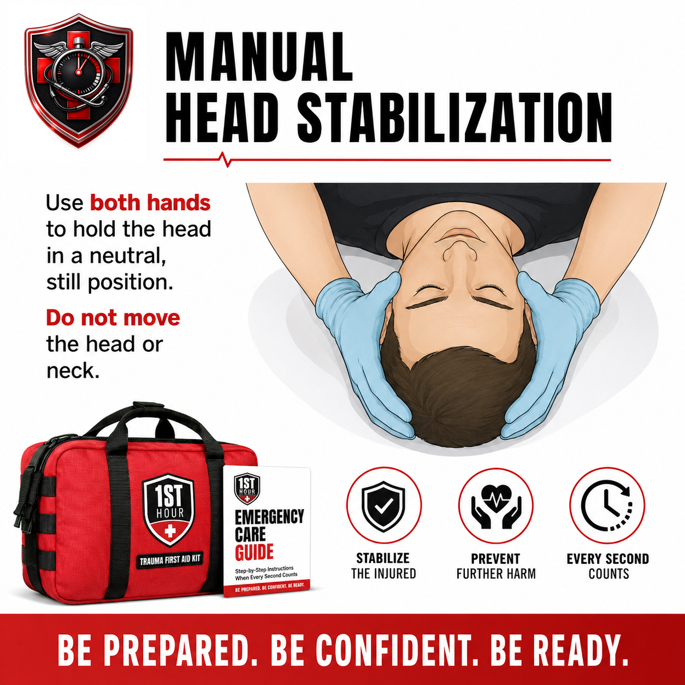

Car Accident Trauma
What to do in the first minutes after a vehicle collision — scene safety, spinal precautions, and multi-occupant triage, built on top of the bleeding-control skills from Severe Bleeding & Hemorrhage Control.
1. Why the First Hour Matters
A vehicle collision is different from most other emergencies in this library in one specific way: the scene itself is often still dangerous when you arrive. Traffic is still moving, a damaged vehicle can leak fuel or catch fire, and the wreckage itself — broken glass, sharp metal, an unstable vehicle position — can hurt the person trying to help before it ever gets a chance to hurt anyone else. That's why this guide spends its first two sections on the scene, not the patient. Every technique in the rest of this book assumes you're not about to become the second casualty.
Once the scene is actually safe to approach, the injuries themselves are frequently ones this library already covers — severe bleeding from glass or metal, shock from blood loss or trauma. What's genuinely new here is the layer on top of those injuries: whether it's safe to move the person at all, how to protect a possible spinal injury while you work, and how to prioritize care when more than one person in the vehicle is hurt.
This guide assumes you already know — or are about to learn from Severe Bleeding & Hemorrhage Control — how to control serious bleeding with direct pressure, packing, and a tourniquet. What follows is everything specific to a roadside collision: staying safe while you work, when moving someone is more dangerous than leaving them, and what a dispatcher needs to hear about a multi-vehicle, multi-person scene.
2. Scene Safety First
Before you approach a crashed vehicle, take ten seconds to actually look at the scene rather than moving on instinct. A collision scene has hazards a typical medical emergency doesn't: moving traffic that may not see you, fuel or fluid leaks, a vehicle balanced unstably, and — occasionally — a vehicle that's already on fire or close to it.
- Turn on your hazard lights the moment you stop, even before you get out of your own vehicle.
- Position yourself and your vehicle to protect the scene, not block traffic further. If you're driving up on the scene, park with your hazards on well back from the wreck, ideally positioned to shield it from oncoming traffic without adding to the obstruction.
- Place warning triangles or flares at least 100–150 feet behind the wreck if you have them — and farther still (up to 300 feet) on a highway or a curve with limited sightlines, so approaching drivers at higher speeds have real time to react.
- Stay out of the travel lane. Work from the shoulder, behind a barrier, or from the "safe zone" side of the vehicles whenever the wreck's position allows it. Keep your back to a clear space you can retreat into, not to traffic.
- Check for fire and fuel-leak signs before you get close — the smell of gasoline, visible smoke, or flame anywhere on the vehicle. If any of these are present, do not approach; see the exception in Section 3.
- If the scene isn't safe to enter — active fire, a vehicle in an unstable position, ongoing traffic risk you can't control — stay back, call 911, and wait for fire/rescue or police to secure it before attempting to reach anyone inside.

3. The "Don't Move Them" Default
Once the scene is safe and you've reached the injured person, the next instinct many people have is to pull them out of the vehicle or move them to a more comfortable position. Resist that instinct. The default is to leave an injured occupant exactly where you found them and stabilize them in place, because a collision that's forceful enough to cause a serious injury is also forceful enough to injure the spine — and an undiagnosed spinal injury can become far worse, including permanent paralysis, if the neck or back is twisted, bent, or jarred during a rescue that wasn't actually necessary.
This default has narrow, specific exceptions — situations where the danger of staying put is clearly greater than the danger of moving someone with a possible spinal injury:
- Active fire or a serious, confirmed fuel leak with fire risk — a vehicle that is burning or about to burn.
- The vehicle is submerged or rapidly filling with water, and the person cannot breathe where they are.
- There is a real, specific, and immediate risk of a second collision that you cannot prevent through scene safety measures (Section 2) — for example, the vehicle is still in a live travel lane on a blind curve and traffic cannot be stopped or warned in time.
- The person is not breathing and needs to be moved to a flat surface for CPR — airway and breathing take priority over spinal precautions, the same priority order used throughout this library.
If none of the exceptions apply, your job is to leave the person where they are, keep them as still as possible, and move directly to Section 5's manual stabilization technique while you wait for EMS — who carry the boards and collars designed to move someone with a suspected spinal injury safely.
4. The Immediate Response Protocol
This is the sequence for a car accident specifically. It layers the scene-safety and spinal-precaution material from the sections above onto the same core priority order used throughout this library: a life-threatening bleed or an airway problem is addressed before anything else, including spinal precautions. Read it now, before you ever need it.
- Confirm the scene is safe before approaching, per Section 2. If it isn't — fire, fuel leak, ongoing traffic risk — stay back and call 911 instead of entering the scene.
- Call or have someone call 911 immediately. Don't wait until you've assessed the person first. If you're alone, put the phone on speaker and start checking on the person while you talk to the dispatcher — see Section 8 for exactly what they'll need to know.
- Check responsiveness, breathing, and airway. Speak to the person and gently check if they respond. If they are not breathing, this is one of Section 3's specific exceptions to the "don't move them" default — moving them to a flat surface to begin CPR takes priority over spinal precautions. Move them as carefully as the situation allows, supporting the head and neck to limit twisting during the move itself, but do not delay starting CPR to perfect that support. If you're trained in CPR, begin it; if not, the 911 dispatcher can talk you through it in real time.
- If you see severe, life-threatening bleeding, control it right now. Use your bare hands if nothing else is available, or non-latex gloves from your kit if they're within reach, then apply direct pressure, packing, or a tourniquet exactly as covered in Severe Bleeding & Hemorrhage Control — see Section 6 for what's different about a car-accident wound specifically. This step takes priority over spinal precautions; do not spend time perfecting head stabilization on someone who is bleeding out.
- If there's no severe bleeding and no other immediate life threat, minimize movement and support the head and neck in the position found, per Section 5's manual stabilization technique. This is where spinal precautions become the priority — after airway and severe bleeding are addressed, not before.
- Give the dispatcher the details from Section 8 if you haven't already covered them in step 2 — number of vehicles, number of people, and their apparent condition.
- Monitor and reassess continuously — breathing, responsiveness, and bleeding — until EMS physically arrives and takes over.
5. Spinal Injury Red Flags & Manual Stabilization
You cannot rule out a spinal injury at the roadside — that requires imaging a hospital can do. What you can do is recognize the signs that raise real suspicion, and support the head and neck in a way that minimizes further risk while you wait for EMS.
Red flags that raise suspicion of a spinal injury:
- The mechanism of the crash itself was forceful — a high-speed impact, a rollover, significant vehicle damage, or the person was thrown from their seat or the vehicle.
- Pain in the neck or back, especially pain that's sharp or worsens with any movement.
- Numbness, tingling, or a "pins and needles" sensation anywhere in the arms or legs.
- Weakness or an inability to move an arm, a leg, or a hand normally.
- The person reports they can't feel you touching a limb, or reports the sensation is different from the other side of their body.
- Any loss of consciousness at the time of the crash, even briefly.
If you observe any of these — or if you're simply unsure — treat it as a suspected spinal injury and follow the manual stabilization technique below. When in doubt, the safer assumption is always the more cautious one.
Manual head and neck stabilization:
- Kneel or position yourself at the top of the person's head, facing their feet, without moving them to get there.
- Place a hand on each side of the head, over the ears, with your fingers spread for a stable grip.
- Gently support the head in the position you found it in — do not attempt to straighten, tilt, or align it to a "neutral" position if that requires moving it. The goal is to prevent further movement, not to correct the current position.
- Hold steady, gentle pressure — enough to resist the head moving on its own from small vibrations or the person shifting, not enough to actually restrict them if they try to move (encourage them not to, instead).
- Talk to the person continuously. Explain what you're doing and ask them to stay as still as possible and keep their head in place, which reduces the chance they'll move on their own.
- Maintain this position until EMS arrives and physically takes over — they carry a cervical collar and backboard designed to move someone with a suspected spinal injury safely, which is a different job than the manual hold you're providing.

6. Bleeding Control — By Reference
This book does not re-teach direct pressure, wound packing, or tourniquet application step by step — Severe Bleeding & Hemorrhage Control covers the full technique in detail, and it applies here exactly as written. What's different about a car-accident wound is the context it happens in, not the technique for stopping it:
- Bleeding may be hidden under clothing. A seatbelt, airbag, or impact injury can cause significant bleeding that isn't obvious at a glance — do a visual and gentle physical check for blood on clothing, pooling, or a wet/dark patch before assuming there's no serious bleeding.
- Expect multiple wound sites. Broken glass and torn metal frequently cause several separate lacerations rather than one clean wound — check the whole body systematically rather than stopping at the first cut you see, the same principle covered in more depth in Gunshot Wound Response's full-body-check guidance.
- Apply pressure without moving the person more than necessary. The Section 3 "don't move them" default still applies while you're treating a wound — you can usually reach and pack a wound, or hold direct pressure, without repositioning the person's spine. If a wound's location genuinely requires some repositioning to treat, that limited, necessary movement to stop life-threatening bleeding is justified by the same "airway and bleeding first" priority from Section 4 — but move only as much as the treatment actually requires, not more.
7. Airbag Deployment & Broken-Glass Injuries
Two injury sources show up in car accidents specifically and rarely anywhere else in this library: the airbag itself, and broken glass from windows or windshields.
Airbag-related injuries
A deployed airbag can cause abrasions, friction burns, and bruising on the face, chest, and forearms — usually minor, but check carefully, since the same impact that triggered the airbag can also cause more serious injury underneath a minor-looking mark. Some people also experience temporary irritation from the fine powder (cornstarch or talc-based lubricant, plus combustion byproducts) released when an airbag deploys — irritated eyes, throat, or a cough. This typically resolves on its own; treat it like any minor irritant exposure and mention it to EMS if it doesn't improve.
Broken-glass injuries
Side and rear windows are tempered glass, designed to shatter into small, relatively dull pebbles rather than large shards — these tend to cause a pattern of many small lacerations rather than one deep wound. A windshield is different: it's laminated (a layer of plastic between two layers of glass), so it typically cracks into a spiderweb pattern and stays largely intact rather than shattering — if it does break through, it can produce longer, sharper-edged cuts more like a single deep wound than a scatter of small ones. Treat every laceration using the direct-pressure technique from Section 6 either way; for the many-small-wounds pattern specifically, check the total bleeding across all of them, since several small wounds bleeding at once can add up to a significant volume of blood loss.
8. What to Tell the 911 Dispatcher
A car accident dispatch benefits from a few specific pieces of information beyond the basics, since it affects how many units are sent and how they're routed:
- Exact road position: direction of travel, the nearest mile marker, exit number, or cross-street — this is often the single most valuable piece of information you can give, since it determines how fast responders can actually find the scene.
- Number of vehicles involved.
- Number of people and their apparent condition — conscious/unconscious, breathing/not breathing, visibly bleeding — for each person if there's more than one.
- Whether anyone is trapped inside a vehicle, which determines whether fire/rescue with extrication equipment is dispatched alongside EMS.
- Whether there's fire, smoke, or a fuel leak — this is safety-critical information for both the dispatcher's guidance to you and the responding units' approach.
Stay on the line if you can. The dispatcher may walk you through checking on someone, applying pressure to a wound, or maintaining manual stabilization in real time, and they need ongoing updates to route the response correctly.
9. Triaging Multiple Occupants
When more than one person is hurt, you have to decide who to help first. This isn't a formal triage system — that's outside a single bystander's scope and training — but a short, concrete priority order that matches how this library treats every multi-casualty scenario:
- Unresponsive or not breathing, first. A person who isn't breathing needs immediate attention — moving them if necessary for CPR overrides the Section 3 default, per Section 4.
- Uncontrolled severe bleeding, second. Someone actively losing a life-threatening amount of blood is the next priority after an airway problem.
- Everyone else, third. Once the immediately life-threatening problems are addressed — even if only partially, such as a tourniquet applied and left in place — move to assess and support the remaining occupants, including anyone who seems uninjured but may be in shock or distress.
If a second capable bystander is present, split up: one person per identified severe problem rather than everyone clustering around the first person found. Tell the 911 dispatcher how many people you're managing and their conditions, per Section 8 — this directly affects how many units are sent.
10. Shock Recognition
Shock risk after a car accident comes from the same sources this library already covers in depth — blood loss and severe trauma — so this section stays brief by design. For the full recognition and management walkthrough, see Severe Bleeding & Hemorrhage Control's Section 7, or Shock Management once it's published, for a deeper treatment.
Watch for:
- Pale, cool, or clammy skin
- Rapid, weak pulse
- Rapid, shallow breathing
- Confusion, anxiety, or restlessness
- Progressive weakness or loss of consciousness
If you see these signs: keep bleeding controlled (it won't improve otherwise), keep the person warm, do not give food or water, and do not lay them flat or reposition them if a spinal injury is suspected per Section 5 — supporting them in the position they're already in is usually the right call in a vehicle-collision context specifically, since the Section 3 default against unnecessary movement still applies.
11. Climate & Demographic Notes
A roadside collision doesn't change much by geography, but a couple of factors are worth knowing:
- Weather-related crashes (ice, heavy rain, fog) often mean the same conditions that caused the crash also make the scene itself more dangerous to work in — reduced visibility for oncoming traffic, slick surfaces underfoot. Extend your warning-triangle distance and be more conservative about scene safety in these conditions.
- Rural response-time gap: a crash on a rural highway or backroad can mean a significantly longer wait for EMS and fire/rescue than the same crash in a metro area. Plan to sustain scene safety measures, bleeding control, and manual stabilization for longer than you might expect.
- Extreme heat or cold affects an injured person waiting for EMS the same way it does in any other outdoor emergency — see the climate notes in Severe Bleeding & Hemorrhage Control's Section 9 for the full guidance on warming and cooling considerations, which apply here without modification.
12. When to Call 911
Give the dispatcher the details from Section 8 as you learn them, and stay on the line — they can guide you through scene safety, bleeding control, or manual stabilization in real time, and they need ongoing information to route the response correctly.
Do not attempt to drive an injured occupant to a hospital yourself unless a 911 dispatcher explicitly tells you to because EMS cannot reach you. Beyond the general reasons covered elsewhere in this library — you can't maintain pressure or monitor someone properly in a moving vehicle — a car-accident patient specifically may have an unstabilized spinal injury that a moving vehicle, without proper immobilization equipment, can make significantly worse.
13. Aftercare & Follow-Up
Once EMS has taken over, your job as a first responder is done — a few things are worth knowing for afterward.
- Tell EMS everything you observed and did — mechanism of the crash if you saw it, how you found the person, how long you held manual stabilization, and the time any tourniquet was applied.
- Support uninjured occupants too. Someone who walked away without a scratch can still be in shock or significant emotional distress after a crash — stay with them, keep them warm, and don't leave them alone until someone else can.
- Restock your kit immediately if you used gauze, a tourniquet, or other supplies — a real emergency means those items need replacing before the kit can be trusted again.
- It's normal to feel shaken afterward. Responding to a crash scene is intense, especially the scene-safety decisions under time pressure. Debrief with someone, and talk to a professional if the experience stays with you.
- If you had bare-hand contact with blood, wash thoroughly and mention it to EMS or a doctor — a standard, low-drama thing to flag.
14. Essential Items Checklist
This protocol assumes the same core bleeding-control supplies as Severe Bleeding & Hemorrhage Control, plus a couple of car-specific additions. Restock immediately after any real use, per Section 13.
- Reflective warning triangles or road flares — Section 2. Warns approaching traffic before you or anyone else steps into the travel lane.
- Seatbelt cutter / window-breaker tool — useful if someone is trapped by a jammed belt, though extrication itself is a job for fire/rescue per Section 2.
- Commercial tourniquet (CAT-style) — Section 6. For severe limb bleeding, applied exactly as in the pilot protocol.
- Hemostatic gauze — Section 6. For packing a deep wound.
- Plain roller gauze / trauma dressing — Section 6. Backup packing and dressing for multiple glass-related wounds.
- Non-latex gloves — worn before contact with blood, per Section 4's immediate response steps.
- Emergency/space blanket — Section 10. Warmth slows the progression of shock while you wait for EMS.
- Permanent marker or time-tape — records the exact tourniquet application time for EMS, if one is used per Section 6.
15. Your State: Good Samaritan Protections
Every U.S. state has some form of Good Samaritan law — legal protection for people who provide reasonable emergency assistance in good faith, without expectation of payment. The exact wording, what's covered, and any exceptions vary by state, and laws change over time. Roadside collision response doesn't involve any state-specific medical technique differences, so rather than repeating a full state-by-state grid here, the short version: if you stop to help at an accident scene in good faith and without expecting payment, your state almost certainly has some form of legal protection in place — many states' Good Samaritan statutes specifically mention roadside/highway assistance as a covered scenario.
16. Medical Disclaimer
This guide is for general educational purposes only and does not constitute medical advice, diagnosis, or treatment. It is not a substitute for professional medical care, emergency medical services, or a certified first aid, CPR, or Stop the Bleed course, which we strongly recommend taking in person.
In any real emergency, call 911 (or your local emergency number) immediately. Nothing in this guide should delay that call.
The Good Samaritan law information in Section 15 is general information, not legal advice. Laws vary by state, change over time, and may have exceptions not covered here. Consult a licensed attorney in your state for guidance on your specific situation.
1st Hour and its parent company make no warranty, express or implied, regarding outcomes from applying the information in this guide, and disclaim liability for actions taken based on its contents to the fullest extent permitted by law.
Editor's note: this edition reflects content as of August 24, 2026. 1st Hour periodically revises protocol guides as best practices evolve — visit 1sthourprotocols.com/car-accident-trauma for the current edition and to re-download the latest PDF.